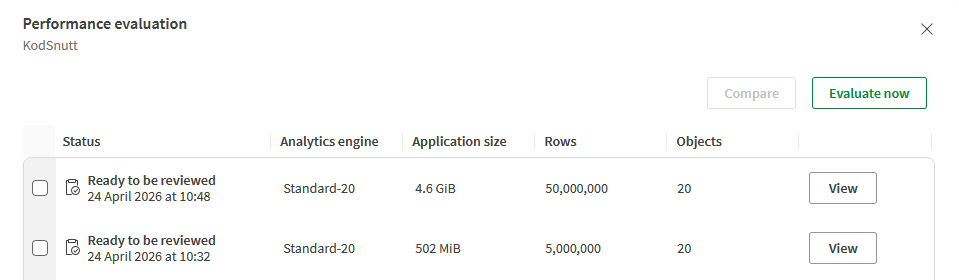
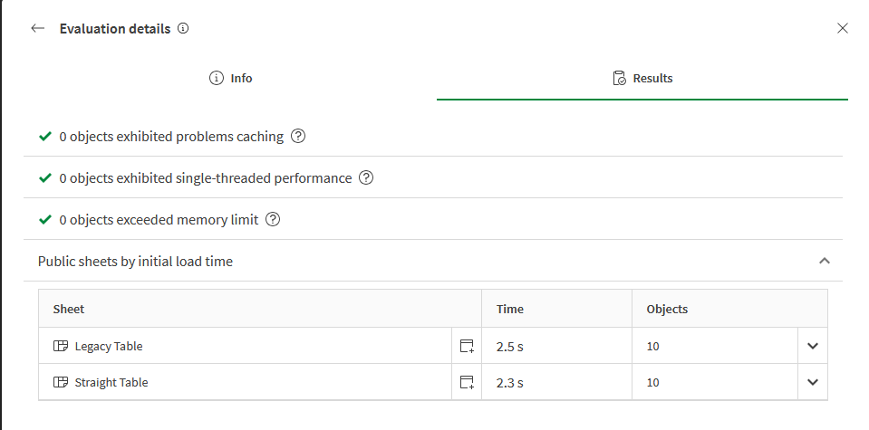
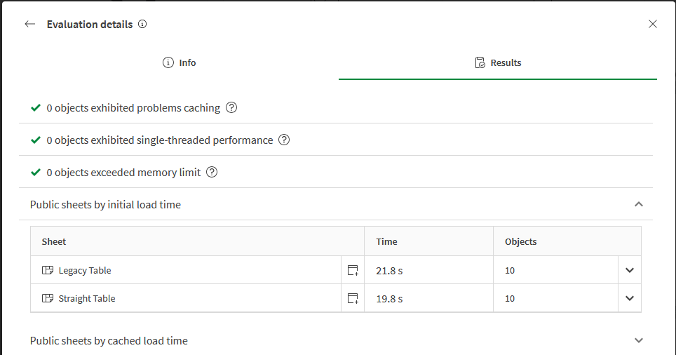

Most people already know they should use the Straight Table for new development — it supports better conditional styling, and is the direction Qlik is investing in. But there is a second reason that gets less attention: it is also faster. I noticed a 0.2-second gap on a 5-million-row app, wondered if it scaled, and tested again at 50 million rows. It does scale — and the 2-second gap at that size is hard to ignore.
The test setup
Two apps, same data model, same expressions. Each app contained two sheets with 10 table objects each — one sheet built entirely with the legacy table, one built entirely with the straight table. The same set of measures and dimensions was used on both sheets, so any difference in load time comes purely from the visualization engine, not the data or expressions.
The small app used 5 million rows (502 MiB). The large app used 50 million rows (4.6 GiB), generated with the same AutoGenerate script scaled up by 10×. Performance was measured using Qlik's built-in Performance Advisor on a Standard-20 engine.

The results
At 5 million rows the difference is small but consistent — 0.2 seconds across 10 objects:
| Table type | App size | Rows | Initial load |
|---|---|---|---|
| Legacy Table | 502 MiB | 5,000,000 | 2.5 s |
| Straight Table | 502 MiB | 5,000,000 | 2.3 s |

At 50 million rows the proportional gap is about the same (~9%), but the absolute difference grows to 2 seconds — which is very noticeable when a user opens a sheet:
| Table type | App size | Rows | Initial load |
|---|---|---|---|
| Legacy Table | 4.6 GiB | 50,000,000 | 21.8 s |
| Straight Table | 4.6 GiB | 50,000,000 | 19.8 s |

Verdict
The straight table is the right choice for two independent reasons: it has better features, and it renders faster. On large apps the performance gap becomes user-visible. If your sheets are already slow and you have legacy tables on them, migrating is one of the easier wins available — no data model changes, no script changes, just replacing the chart type and rewiring your expressions.